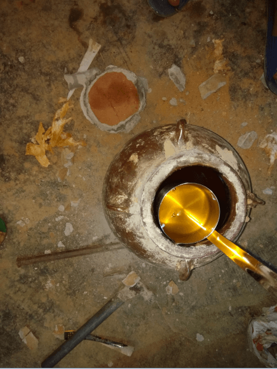

黎苗寨山兰酒
产品简介
黎苗寨山兰酒，主要原料来之海南中部山区原生态山兰米，为海南黎苗农家纯手工酿造，深埋阴凉土地1年以上的精选美酒，口味香甜醇美，营养丰富、酒精含量极少。饮量适当，能舒筋活络、补气养颜、滋阴补阳、延年益寿。黎苗人逢年过节或招待宾客时，必用此酒。
历史介绍
山兰酒是用黎苗族所居山区一种山兰旱稻米和黎山特有的植物，运用自然发酵的方法制成。山兰酒传统的酿造方法颇为独特，制作时，将山兰米蒸熟揉散成粒，再把黎山特定植物（甜糖叶）制作成“酒饼”碾至粉状掺入其中，然后装进坛里。并用少量的水泥封缸，埋到土里自然成酒，一年后酒呈黄褐色，数载则显红色。此时米、糟、叶无衡化为浆液。山兰酒除了清醇可口、味美甘甜以外，还有延年益寿、补气养颜和滋阴补阳的功效。消食去滞，数饮愈伤生肌，常饮驻颜长寿。黎苗家妇女生孩子之后，都要喝此酒用以滋补养身，去湿防病。
营养功效
营养成分：山兰米中的淀粉转化成单糖和低聚糖，这更有利于它快速补充人体的能量，以及改变口味。主要的单糖和双糖有葡萄糖、果糖、麦芽糖、蔗糖、异麦芽糖。
蛋白质和氨基酸：山兰米中大部分的蛋白质是不溶于水的（谷蛋白、醇溶蛋白、清蛋白、球蛋白），经过发酵的过程被分解成为游离氨基酸和多肽类物质，这对于它的营养提高很有帮助。
生素和矿物质：这些物质大部分都是山兰米中本身含有的，主要是他们的结合形式产生了变化，以及根酶在发酵时也会产生一些维生素。主要要有维生素B族，维生素E，多种矿物质。
中医记载：山兰酒甘甜芳醇，能刺激消化腺地分泌，增进食欲，有助消化。山兰经过酿制，营养成分更易于人体吸收，是中老年人、孕产妇和身体虚弱者补气养血之佳品。对下列症状也有一定作用:面色不华、自汗；或平素体质虚弱、头晕眼眩、面色萎黄、少气乏力、中虚胃痛、便清等症。
储存方法
土埋法：土埋树底恒温，36个月。
冷藏法：放在冰箱中密封好，5个月。
常温法：常温下不宜久存，45天。
（注：本产品不能在过高温下存放）
温馨提示
1.山兰酒酒精含量低，但“后劲”十足，不可贪杯。
2.产妇不能直饮过多（最好煮沸后或煮鸡蛋吃法）。
3.开瓶后的酒不能混有油等渣滓。
4.酒色发霉，发酸过度不能食用。
5.一定要密闭好。否则又酸又涩。
生产原料
酿造过程
1.山兰米
2.洗米放入蒸笼
3.慢火蒸数小时
4.蒸好的山兰米
5.搅拌特制的酒饼
6.装入缸中
7.密封

8.水泥封缸
土埋开缸
1.封缸土埋
2.埋一年以上的开挖（图一）
3.埋一年以上的开挖（图二）
4.埋一年以上的开挖（图三）
5.开缸陈年酒（图一）
6.开缸陈年酒（图二）
7.开缸陈年酒（图三）

8.新鲜的陈年酒
重量价格
山兰酒 小瓶68元/1.5斤（图一）
山兰酒 小瓶68元/1.5斤（图二）
山兰酒 大瓶198元/4.5斤（图一）
山兰酒 大瓶198元/4.5斤（图二）
附加产品
野生蜂蜜 118元/斤
糯米酒 小瓶33元/1.5斤
糯米酒 大瓶98元/4.5斤
联系我们
联系人 ：符小姐
联系电话：13389896050 13689865962

扫一扫或长按二维码图案，加我微信